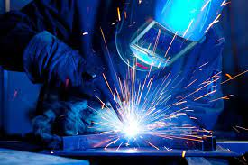

Transforming Homes with Custom Metalworks
When it comes to enhancing the comfort and aesthetics of personal spaces, FusionTech Welding leads the industry with its comprehensive home welding services. Specializing in residential welding and decorative metal welding, FusionTech transforms living spaces into visual and functional masterpieces with custom-made metalworks and ornamental ironworks. Each project, whether it's a bespoke gate or a uniquely designed balcony railing, is crafted with a perfect blend of functionality and artistry, ensuring that every piece not only enhances the beauty of a home but also contributes to its overall security and durability. FusionTech Welding excels in creating tailored solutions that reflect the unique tastes and requirements of their clients. Their expertise in residential welding allows them to offer a variety of custom metalworks, including elegant staircases, decorative gates, and striking balcony railings. These installations not only elevate the aesthetic appeal of a property but also enhance its value, making FusionTech a sought-after partner for homeowners looking to invest in their spaces.
Decorative metal welding is where FusionTech’s artistry truly shines. This intricate process involves shaping metal into detailed designs that add both beauty and character to any living space. From ornamental garden sculptures to intricate metal furniture, FusionTech’s creations are more than just metal structures; they are works of art that seamlessly integrate with the landscape or interior design of a home.
Expert Craftsmen at Your Service
Decorative metal welding is where FusionTech’s artistry truly shines. This intricate process involves shaping metal into detailed designs that add both beauty and character to any living space. From ornamental garden sculptures to intricate metal furniture, FusionTech’s creations are more than just metal structures; they are works of art that seamlessly integrate with the landscape or interior design of a home. With FusionTech Welding, functionality and aesthetics go hand in hand. Every piece is designed not only to be visually pleasing but also to serve a practical purpose. Whether it’s providing security through a well-crafted metal gate or ensuring safety with a sturdy handrail, FusionTech’s products are built to meet the highest standards of functionality. This commitment to quality ensures that each welded item is durable, weather-resistant, and requires minimal maintenance, offering long-term benefits to homeowners./ ;cbv; ;;l;lcv,
Conclusion
FusionTech’s team comprises highly skilled craftsmen who are experts in the field of welding and metal fabrication. Their ability to work with a variety of metals and techniques allows them to execute even the most complex projects with precision. This expertise, combined with a passion for creative design, makes FusionTech the go-to provider for those who wish to transform their living spaces with unique metal features. In conclusion, FusionTech Welding is at the forefront of enhancing residential environments through its superior welding services. Specializing in both functional and decorative metal welding, FusionTech offers homeowners unique solutions that improve both the aesthetics and functionality of their spaces. Each project is a testament to FusionTech’s commitment to quality, innovation, and customer satisfaction, making them a leader in the home improvement industry. For anyone looking to beautify their home with custom metalworks, FusionTech Welding is the ultimate choice for unmatched quality and artistic craftsmanship